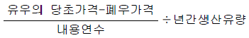
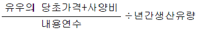
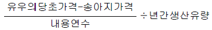
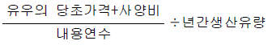
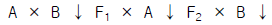

축산기능사 (2001-04-29 기출문제)
1과목: 축산개론
1. 다음 중 손익계산서 계정에 해당되는 것은?
- 비용계정
- 자산계정
- 부채계정
- 자본계정
(정답률: 73%)

2. 축산물의 구매기능에 속하지 않는 것은?
- 수요의 예측
- 수집
- 상품화 계획
- 예상고객의 발견
(정답률: 80%)
3. 어느 양계농가가 사육한 육계를 1마리당 수집상에게 1,000원에 판매하였는데, 이 육계가 도시에서 소비자에게 통닭으로 판매될 때에는 5,000원에 판매되었다. 이 때 농사수취율은?
- 20%
- 30%
- 40%
- 50%
(정답률: 62%)
4. 목초의 분류 중 생존연한에 의한 분류는?
- 방목용
- 다년생(여러해살이)
- 상번초
- 두과목초
(정답률: 88%)
5. 대상방목이라고도 하며 목구를 전기 목책등으로 작게 나누어 초지를 집약적으로 이용하는 것은?
- 고정 방목
- 윤환 방목
- 1일 방목
- 계목
(정답률: 67%)
6. 다음 중 연맥의 특징으로 가장 알맞은 것은?
- 다른 맥류보다 추위에 강하다.
- 뿌리가 적어 수확한 다음 갈아 엎기가 수월하다.
- 기호성이 좋으며 건초용으로 알맞다.
- 출수 후에 줄기가 굳어지는 것이 빠르다.
(정답률: 82%)
7. 다음 중 파종상의 조건으로 알맞은 것은?
- 겉흙과 속흙에 물기가 충분히 있어야 한다.
- 매우 고운 가루 흙이 좋다.
- 씨앗이 자리를 잡는 바로 밑의 흙은 부드러워야 한다.
- 위층과 아래층의 흙은 수분과 양분의 이동이 있어서는 안된다.
(정답률: 96%)
8. 일반적으로 낙농 경영 중 사료비는 우유 생산비의 몇 % 정도를 차지하는가?
- 50% 내외
- 70% 내외
- 80% 내외
- 90% 내외
(정답률: 69%)
9. 면양의 유전력 중 가장 낮은 것은?
- 출생된 새끼양의 수
- 한 살때의 체중
- 이유후 증체중
- 피부주름
(정답률: 75%)
10. 산란계 품종을 선택시 고려할 사항과 가장 거리가 먼 것은?
- 알무게
- 체형
- 산란능력
- 사료 이용성
(정답률: 88%)
11. 축산소득율을 계산하는 공식이 바르게 기술된 것은?
- 축산소득율 = 축산경영비/축산소득 × 100
- 축산소득율 = 축산소득/축산조수익 × 100
- 축산소득율 = 축산조수익/축산수익 × 100
- 축산소득율 = 판매량/축산물 총생산량 × 100
(정답률: 76%)
12. 다음 양돈경영비 중 가장 높은 비율을 차지하는 것은?
- 진료, 위생비
- 사료비
- 고용노임
- 건물 감가상각비
(정답률: 94%)
13. 돼지의 경우 난자와 정자가 수정된 후 착상이 이루어지는 부위는?
- 자궁각
- 자궁체
- 자궁경
- 난관
(정답률: 80%)
14. 젖소의 이상적인 산유주기에서 산유량이 가장 많은 시기는 분만 후 어느 때인가?
- 분만 직후
- 분만 후 1∼2개월
- 분만 후 3∼4개월
- 분만 후 5∼6개월
(정답률: 74%)
15. 노동능률을 높이기 위한 방법이 아닌 것은?
- 노동수단의 고도화
- 노동수단의 인력화
- 작업방법의 표준화
- 노동력 분배의 평균화
(정답률: 76%)
16. 농업적으로 가장 중요한 목초는 콩과(두과)와 벼과(화본과)이다. 그러면 벼과 목초에 비하여 콩과 목초에 비교적 많이 함유되어 있다고 생각되는 조성분은?
- 조단백질
- 조섬유
- 조지방
- 조회분
(정답률: 89%)
17. 엔실리지용 옥수수의 파종적기는 토양온도가 몇 ℃될 때 하는 것이 좋은가?
- 0℃
- 10℃
- 20℃
- 30℃
(정답률: 54%)
18. 다음 닭 중 미국원산으로 깃털은 적갈색이고 난각은 갈색이며 체구가 비교적 큰 닭은?
- 미노르카
- 레그혼
- 뉴우햄프셔
- 플리머드록
(정답률: 67%)
19. 착유한 원유의 저장온도로서 적당한 것은?
- -10℃
- 4∼5℃
- 15℃∼20℃
- 50℃
(정답률: 84%)
20. 다음 중 어릴 때 생리적인 빈혈이 많은 가축은?
- 소
- 돼지
- 토끼
- 오리
(정답률: 76%)
2과목: 사료작물
21. 축산물의 유통기능 중 교환기능에 해당되는 것은?
- 원유의 집유
- 시장정보의 제공
- 축산물의 수송
- 축산물 가공
(정답률: 68%)
22. 한우의 외모심사에서 실격 조건이 아닌 것은?
- 전신 이모색
- 백반과 부분 호반
- 흑만선
- 감점 40점이상 부위가 있는 것
(정답률: 79%)
23. 축산경영에서 순이익이 최대가 되기 위한 조건이 아닌 것은?
- 총수익과 총비용의 차액이 최대일 때
- 생산요소와 생산물의 가격비가 한계생산과 일치할 때
- 한계수익과 한계비용이 일치할 때
- 평균생산량이 생산요소와 생산물의 가격비와 일치할 때
(정답률: 60%)
24. 구입사료를 중심으로 한 토지 이탈적 유형에 속하는 것으로 주로 도시근교에 집중되어 있는 낙농경영의 유형은?
- 전업적 낙농경영
- 복합적 낙농경영
- 겸업적 낙농경영
- 착유전업적 낙농경영
(정답률: 80%)
25. 브로일러 양계경영 특성상 단점은?
- 자본회전이 느리다.
- 다른 가축보다 사료 효율이 낮다.
- 위험부담의 기간이 길다.
- 가격의 변동이 크다.
(정답률: 77%)
26. 자급사료의 생산비 절감을 위한 다모작 작부방법도 농업 경영의 한 과정이므로 사료작물의 작부체계 운영에 있어서 농업경영상 지켜야 할 조건과 거리가 먼 것은?
- 농가 노동분배의 합리화
- 토양 비옥도의 지속적 유지
- 위험분산과 사료작물 자급률 제고
- 수량 우수성 작물의 지속적 재배
(정답률: 48%)
27. 낙농경영의 수익에 해당되지 않는 것은?
- 우유 판매대금
- 송아지 판매대금
- 자가소비우유
- 자가노동비
(정답률: 56%)
28. 옥수수 사일리지를 조제할 때 재료를 베는 시기로 알맞은 것은?
- 탄수화물 함량이 높고 수분함량이 낮을 때
- 단백질 함량이 높고 잎과 줄기의 비율이 높을 때
- 수분 함량이 높고 탄수화물 함량이 높을 때
- 잎과 줄기의 비율이 높고 수분함량이 많을 때
(정답률: 57%)
29. 특히 추위에 강하기 때문에 우리나라 고냉지에서 재배하기에 알맞은 질이 좋은 건초의 재료는?
- 티머시
- 레드톱
- 라디노 클로버
- 톨 페스큐
(정답률: 73%)
30. 현재 한우번식우 10두를 사육하고 있는 농가에서 1년에 17,500,000원의 조수익을 올리고 있는데 경영비는 7,500,000원이 소요된다고 한다. 이 농가는 부분예산법에 의하여 번식우 경영으로 부터 낙농경영으로 전환을 모색하고 있다. 젖소 10두로 대체사육을 하면 1년에 35,000,000원의 조수익과 20,000,000원의 경영비가 소요될 것으로 추정된다. 이때 대체경영에 의하여 예상되는 경영성과는?
- 10,000,000원의 순이익 증가가 예상된다.
- 5,000,000원의 순이익 증가가 예상된다.
- 5,000,000원의 순손실 발생이 예상된다.
- 이익도 손실도 발생하지 않는다.
(정답률: 73%)
31. 소비자의 소득수준과 밀접한 관계가 있는 축산물 유통의 기능은?
- 수송기능
- 저장기능
- 가공기능
- 경영적기능
(정답률: 65%)
32. 단위면적당 생산성이 높고 사초의 품질도 우수하여 "목초의 여왕"이라고 불리기도 하나 산성이 강하고 배수가 나쁜 토양에서는 잘 자라지 못하며 처음 조성시 붕소와 근류균 접종이 꼭 필요하기 때문에 널리 재배되고 있지 못한 목초는?
- 알팔파(alfalfa)
- 레드 클로버(red clover)
- 화이트 클로버(white clover)
- 벌노랑이(birdsfoot trefoil)
(정답률: 88%)
33. 다른 기생충병과는 달리 색소반응, 적혈구, 응집반응, 보체결합반응 등으로 진단하는 가축의 기생충병은?
- 소의 트리코모나스증
- 소의 베스노이티아병
- 돼지의 톡소플라즈마병
- 닭의 콕시듐증
(정답률: 65%)
34. 다음 중 우유 1㎏당 유우상각비를 바르게 표시한 것은?




(정답률: 86%)
35. 인공포유 요령에 옳지 못한 것은?
- 포유기구의 소독을 철저히 하고 깨끗이 관리하여야 한다.
- 포유시 우유의 온도는 38-40℃가 적합하다.
- 포유는 일정한 시간에 실시하고 신선한 젖을 먹여야 한다.
- 한방에서 여러마리 사육할때는 큰 그릇에 여러 마리가 함께 포유하여 서로 빨도록 한다.
(정답률: 94%)
36. 소에서 고열과 호흡기 계통의 급성염증 및 괴사를 특징으로 하는 전염병으로, 병원체는 헤르페스 바이러스(Herpesvirus)이며 2차 혼합감염의 위험이 높은 질병은?
- 바이러스성 하리증
- 전염성 비기관염
- 유행열
- 유행성 뇌염
(정답률: 78%)
37. 양계관리 위생에서 겨울철 극히 건조할 때에는 다음 중 어느 질병이 많은가?
- 뉴캐슬병
- 마이코플라즈마병
- 계두
- 케톤증
(정답률: 55%)
38. 우유의 품질에 결정적인 영향을 미치는 젖소의 질병은?
- 식체
- 고창증
- 후산정체
- 유방염
(정답률: 90%)
39. 치즈 제조하는데 있어서 필요한 사항이 아닌 것은?
- 유산균
- 응유효소
- 살균기
- 건조기
(정답률: 88%)
40. 가축의 소화 생리를 설명하고 있다. 다음 중 영양분의 흡수를 가장 많이 하는 곳은?
- 위장
- 식도
- 대장
- 소장
(정답률: 79%)
3과목: 축산경영
41. 안드로겐을 분비하는 기관은 어느 것인가?
- 정소
- 정낭선
- 전립선
- 카우피선
(정답률: 86%)
42. 닭의 세균성 전염병으로 석고상태의 흰 설사를 한 후 항문이 막혀서 죽게 되는 닭의 질병은?
- 추백리
- 계두
- 뉴캐슬
- 뇌척수염
(정답률: 83%)
43. 호밀의 적정 파종량은 120㎏/㏊ 이라고 한다. 그러면 벼를 수확한 15,000평의 논에 필요한 호밀 종자의 양은?
- 120 kg
- 300 kg
- 600 kg
- 900 kg
(정답률: 67%)
44. 고기소 경영의 유형별 특성을 바르게 설명한 것은?
- 번식우 경영 - 암송아지는 분만 전, 수송아지는 비육개시 전까지 사육하는 형태
- 비육우 경영 - 송아지나 수소를 고기생산 목적으로 사육하는 형태
- 일관 생산 경영 - 주로 번식기의 암소를 사육하고 번식에 필요한 종모우와 인공수정을 실시하여 번식 시키는 형태
- 육성우 경영 - 번식우 경영으로 생산한 수송아지를 비육하여 출하하는 형태
(정답률: 68%)
45. 다음은 목초종자의 종자등급을 나열한 것이다. 다음 중 균일성이나 유전적인 순도면에서 가장 떨어진다고 생각되는 종자의 등급은?
- 기본종자(breeder seed)
- 원종자(foundation seed)
- 보증종자(certified seed)
- 등록종자(registered seed)
(정답률: 72%)
46. 다음 중 방목을 실시할 때 계절에 따른 휴목 기간에 대한 설명으로 알맞는 것은?
- 봄이 여름과 가을 보다 길어야 한다.
- 여름이 봄과 가을 보다 길어야 한다.
- 가을이 봄과 여름 보다 길어야 한다.
- 계절에 관계없이 같아야 한다.
(정답률: 96%)
47. 청예용 옥수수의 도복 방지 방법이 아닌 것은?
- 밀식하지 말 것
- 비료는 기준이상 충분히 사용
- 완숙퇴비 사용
- 내도복성 품종선택
(정답률: 78%)
48. 다음 중 비육한 소의 유리한 출하방식은?
- 우시장 이용
- 계통출하 이용
- 도매시장 이용
- 소매시장 이용
(정답률: 89%)
49. 건초 제조법 중 포장 건조법에 관하여 바르게 설명한 것은?
- 인공 건조법이라고도 한다.
- 송풍기에 의하여 바람으로 말리는 방법이다.
- 화력 건조법 등이 있다.
- 천일 건조법이라고도 한다.
(정답률: 70%)
50. 목초는 이용하는 방법에 따라 목초가 함유한 영양분의 이용률이 다른 데 다음 중 목초 이용율이 가장 높은 급여 형태는?
- 생초
- 건초
- 엔실리지
- 헤일리지
(정답률: 69%)
51. 한번 조성한 초지를 잘 관리하면 오랫동안 높은 생산성을 유지할 수 있다. 그런데 우리 나라에서는 여러 가지 이유로 생산성이 급격히 낮아지는 초지가 많다. 초지의 생산성이 낮아지는 이유에는 여러 가지가 있지만 우리나라 초지의 저위 생산성에 영향이 미치는 요인으로 거리가 먼 것은?
- 조성 초기 관리의 미숙
- 추비 또는 분뇨의 과다 시용
- 초지의 과다 및 과소 이용
- 여름철의 수확 지연
(정답률: 69%)
52. 소에 있어서 근육 주사를 놓는 부위로 적당한 곳은?
- 목의 양쪽
- 엉덩이
- 등허리
- 외음부
(정답률: 87%)
53. 초지내 습지나 다소 선선한 지역에서도 잘 자라며 토양을 가리는 성질이 적어 산성토양, 척박한 토양에도 잘 자라는 사료용 피에 대한 설명이다. 가장 거리가 먼 것은?
- 종자의 생산이 용이하고 많으나 체계적인 종자공급 체계가 이루어지지 않고 있다.
- 어릴 때부터 방목하면 청산중독의 위험이 있어서 충분히 자란 다음 이용한다.
- 파종 후 2-3개월 내에 풋베기 생산이 가능하다.
- 다른 사료작물에 비하여 재배하기가 쉽다.
(정답률: 82%)
54. 브루셀라병 등과 같이 사료등 가축의 입을 통하여 전염되는 방식은?
- 접촉전염
- 경구전염
- 흡입전염
- 매개체에 의한 전염
(정답률: 89%)
55. 다음 중 섞어뿌리기 조합의 기본 원칙은?
- 섞어뿌리기는 많은 종을 섞어 복잡해야 한다.
- 조합시 초종간 서로 경합 능력이 달라야 한다.
- 파종량은 홑뿌림 때보다 적어야 한다.
- 방목용 초지에서는 초종간 기호성이 비슷해야 한다.
(정답률: 67%)
56. 초지의 이용방법 중 생초를 그대로 베어서 축사에 운반한 다음 급여하는 방법은?
- 풋베기
- 방목
- 건초
- 사일리지
(정답률: 91%)
57. 경영진단의 종류 중 외부비교법에 해당하는 것은?
- 시계열 비교법
- 계획 대 실적 비교법
- 부문간 비교법
- 직접 비교법
(정답률: 80%)
58. 다음 그림의 교잡법은 무슨 교잡법을 나타내고 있는가?

- 2원 교잡
- 퇴교배
- 3원 교잡
- 상호역교배
(정답률: 69%)
59. 사일리지용 옥수수의 생리적 성숙기를 가장 바르게 설명한 것은?
- 단위면적당 가소화양분함량이 최고에 도달하나 건물 수량은 적은 시기
- 단위면적당 건물수량이 최고에 도달하나 가소화양분 함량은 적은 시기
- 포장에서 옥수수의 양분 손실이 가장 많이 발생하는 시기
- 단위면적당 가소화양분함량과 건물수량이 최고에 도달하는 시기
(정답률: 69%)
60. 암돼지 발정주기 동기화의 장점이 아닌 것은?
- 가축관리가 용이
- 계획번식
- 인공수정이 용이
- 수유중 발정
(정답률: 85%)